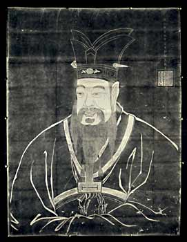

Confucius bornConfucius was born in 551 B.C.

Rubbing of Confucius
He is one of the most important teachers and philosophers in Chinese history. He believed that disorder must be averted by upholding traditional hierarchies and rituals. Confucius encouraged ancestor worship and the idea of 'filial piety'. Filial piety meant that children must respect and honour their parents; younger brothers must respect their older brothers; everyone must respect and honour their grandparents and so on. |